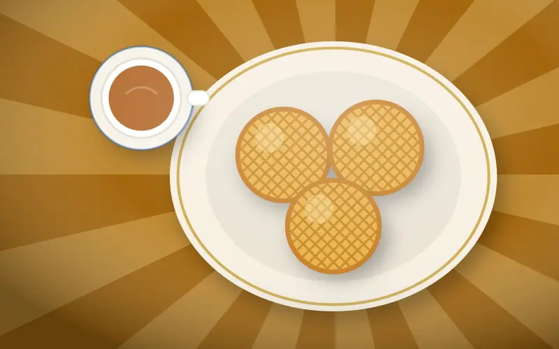
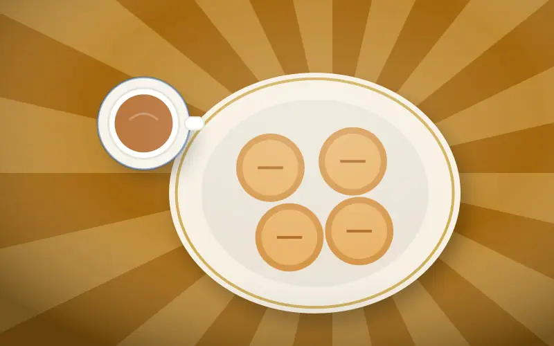
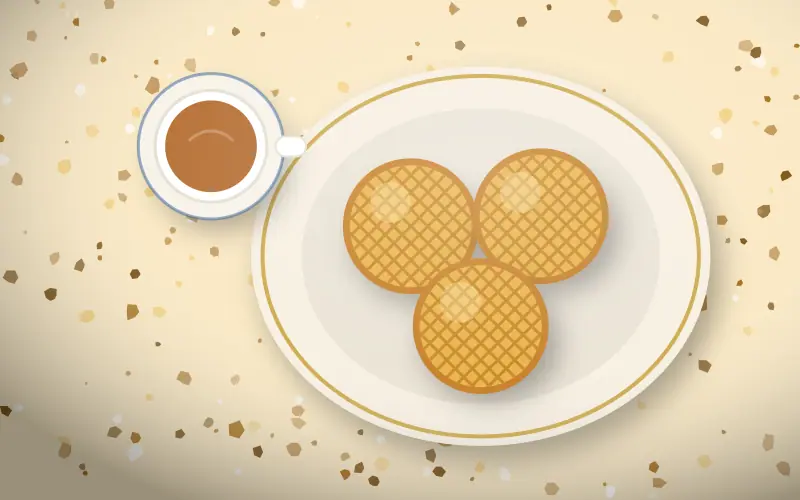
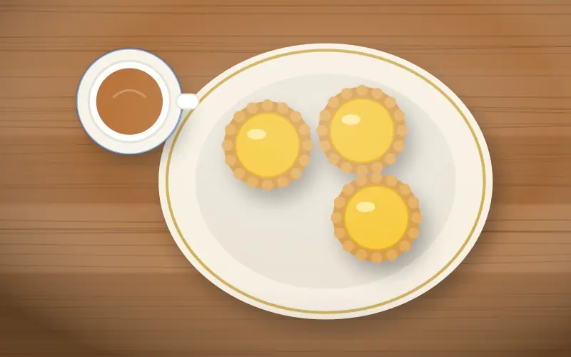

Cheap bakery in Hong Kong 餅店
12 places, from HK$16, ranked by Value Score.

Happy Cake Shop快樂餅店 · Wan Chai~$20 Kwok Kam Kee Cake Shop郭錦記餅店 · Cheung Chau~$16
Kwok Kam Kee Cake Shop郭錦記餅店 · Cheung Chau~$16 Wing Wah Cake Shop榮華餅家 · Yuen Long~$24
Wing Wah Cake Shop榮華餅家 · Yuen Long~$24 Tai Cheong Bakery泰昌餅家 · Central$38
Tai Cheong Bakery泰昌餅家 · Central$38  Saint Honoré (Yuen Long)聖安娜餅屋（元朗） · Yuen Long~$24
Saint Honoré (Yuen Long)聖安娜餅屋（元朗） · Yuen Long~$24 Saint Honoré (Ngau Tau Kok)聖安娜餅屋（牛頭角） · Ngau Tau Kok~$28
Saint Honoré (Ngau Tau Kok)聖安娜餅屋（牛頭角） · Ngau Tau Kok~$28
Bakehouse (Wan Chai)Bakehouse（灣仔） · Wan Chai~$52
Saint Honoré (Tsuen Wan)聖安娜餅屋（荃灣） · Tsuen Wan~$28 Kee Wah Bakery (Sha Tin)奇華餅家（沙田） · Sha Tin~$38
Kee Wah Bakery (Sha Tin)奇華餅家（沙田） · Sha Tin~$38
Hang Heung Cake Shop恒香老餅家 · Yuen Long$48 Kee Wah Bakery (Mong Kok)奇華餅家（旺角） · Mong Kok~$42
Kee Wah Bakery (Mong Kok)奇華餅家（旺角） · Mong Kok~$42 Ali Oli BakeryAli Oli Bakery · Sai Kung~$62
Ali Oli BakeryAli Oli Bakery · Sai Kung~$62More guides
Best meals under HK$50Cheap eats under HK$30Best value for moneyLate-night cheap eatsHidden gemsCheap breakfast in Hong KongRoast Meats 燒味Cha Chaan Teng 茶餐廳Dim Sum 點心Noodles 粉麵Congee 粥品Claypot 煲仔Cantonese 粵菜Seafood 海鮮Desserts 甜品Bakery 餅店Street Snacks 小食Vegetarian 素食HK Fast Food 快餐Rice Noodles 米線Thai 泰國菜Curry 咖喱Japanese 日式Vietnamese 越南菜Taiwanese 台灣菜Shanghainese 上海菜Dumplings & Northern 北方菜HK-style Western 港式西餐